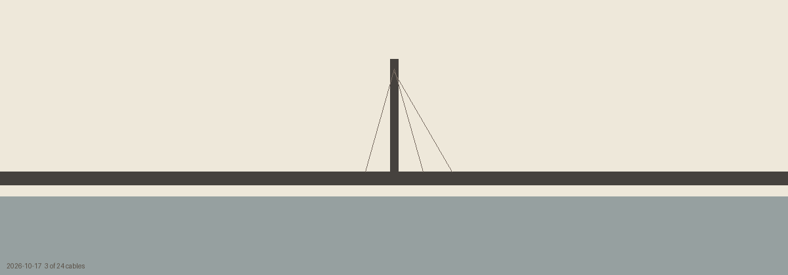

2026-10-15 · 12
The white thing is still a saddle, but it climbs the right half in pieces that do not meet; the sound is 2.5 seconds, forty per cent silence, and I can only read it, not hear it: three pitches, no word.